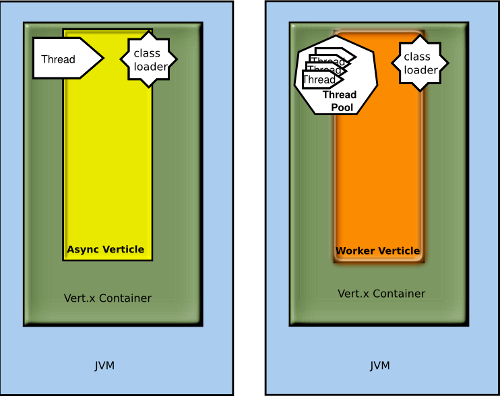
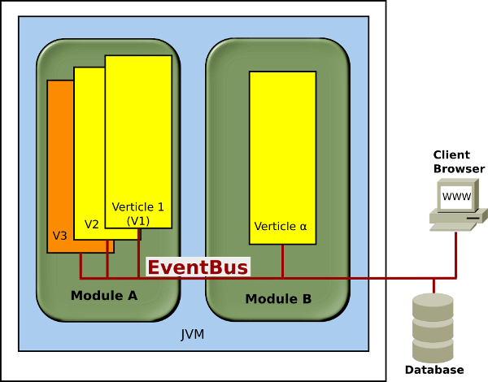
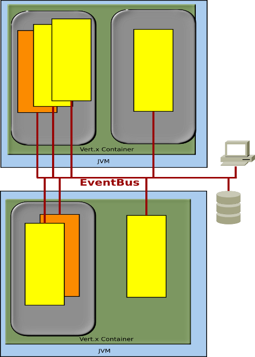

Vert.x on OpenShift
WebSockets for the rest of us
Presented by:
Steven Pousty
talks.thesteve0.com/vertxfoss4g
@TheSteve0 on Twitter, IRC, Instagram, Ingress, SmugMug, and Github

Agenda
- Learn a bit about PaaS
- A little about Vert.x on OpenShift
- See some polyglot websocket mapping goodness
Here is what we are going to build
http://ft2-spatial.rhcloud.com/ or bit.ly/vertbus !
But I know EC2...

Vert.x
- Polyglot - anything that runs on JVM
- Asynchronous or Synchronous
- Non-blocking IO (based on Netty)
- Event Bus and Websockets out of the box
- Tons-o-modern Web Utility functions
Architecture and Terms pt I
Architecture and Terms pt II
Architecture and Terms pt III
Vert.x on OpenShift
On GitHub! Maintained by Nick Scavelli
So simple - anyone can do it
Differences from usual Vert.x deploy
- No command line instead vertx.env
- On a scalable, not really made for different verticles in different gears
- No failover - likely to be a module
- No git push to build and deploy
Scenario
Enough Talk - CODE!

Let's wrap it up
- Vert.x is async and awesome without needing to know Node.js
- Vert.x is great on OpenShift and getting better - blog post here
- Free!
- Github repo: https://github.com/thesteve0/flighttracker
Come hang out with us:
#openshift or #openshift-dev on freenode irc
OR
users@lists.openshift.redhat.com